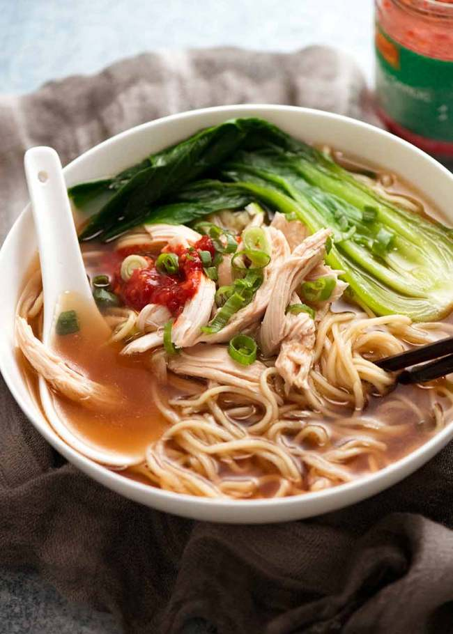

Chinese Noodle Soup

Description
Chinese Noodle Soup is incredibly quick and easy – if you know the secret seasonings! You’d swear the Asian soup broth is from a Chinese restaurant, it’s that good.
10 minutes, just 352 calories for a big bowl. Use any noodles, any vegetables, any protein – or not! Terrific fridge forage food.
Ingredients
BROTH:
- 750 ml chicken stock/broth, low sodium
- 2 garlic cloves, smashed
- 1.5 cm / 1/2" ginger piece, cut into 3 slices (optional, but highly recommended)
- 1 1/2 tbsp light soy sauce, or normal all purpose soy sauce
- 2 tsp sugar (any)
- 1 1/2 tbsp chinese cooking wine
- ▢1/4 - 1/2 tsp sesame oil, toasted (optional)
TOPPINGS & NOODLES:
- 180g / 6oz fresh egg noodles
- 2 large bok choy or other vegetables of choice (use any blanchable veg)
- 1 cup shredded cooked chicken (or other protein of choice)
- 1 scallion / shallot, green part only finely sliced (optional garnish)
Directions
- Place Broth ingredients in a saucepan over high heat. Place lid on, bring to simmer then reduce to medium and simmer for 8 - 10 minutes to allow the flavours to infuse.
- Meanwhile, cook noodles according to packet directions.
- Cut bok choys in half (for small / medium) or quarter (for large). Wash thoroughly.
- Either cook the bok choi in the broth in the soup broth OR noodle cooking water for 1 min (if noodles required boiling).
- Pick garlic and ginger out of soup.
- Place noodles in bowls. Top with chicken and bok choy. Ladle over soup, garnish with green onions. Great served with chilli paste or fresh chillis.
Back to Homepage